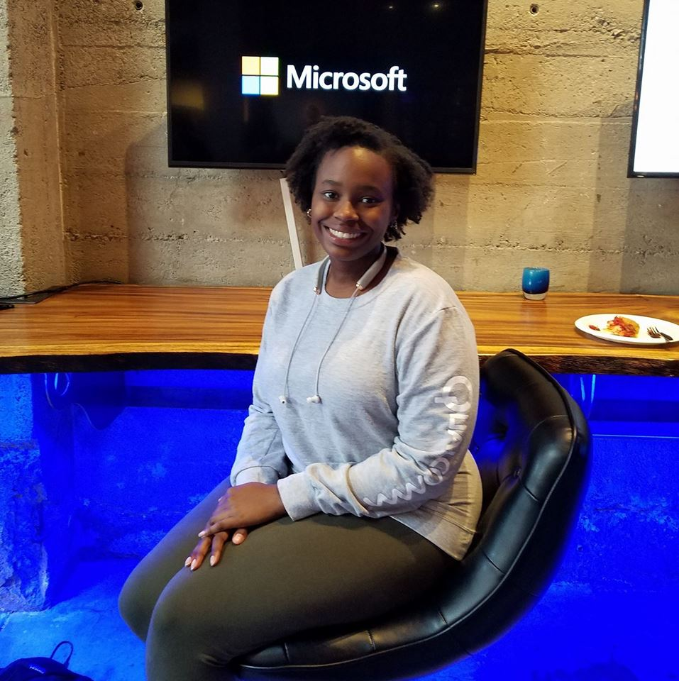

Hello! My name is Andriana Burgess. I am a junior Computer Science major from Brooklyn,NY. I attended Brooklyn Technical High School where I found my love for Computer Science. My entire family is from the Caribbean island of Barbados. I am an only child. I do not know how to drive. This passed summer I had the opportunity to intern at Facebook. I had a lot of fun while learning a lot too. I am currently the President of the Howard Chapter of the Society of Women Engineers.mI am also a Curls campus ambassador. I am a strong believer in having extracurricular activies.